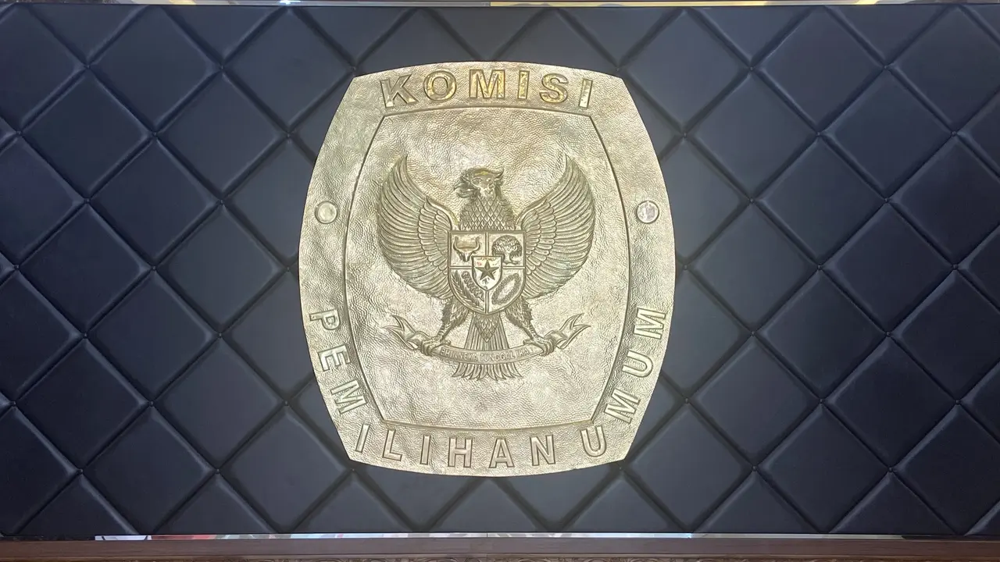

Home
Kategori
Politik
Kriminal
Olahraga
Teknologi
Bisnis
Kesehatan
Luar Negeri
About
Politik
Intip Harta Kekayaan Anies Baswedan Usai Pamit dari Kursi Gubernur DKI Jakarta
Jokowi Lantik Dewan Pengawas dan Anggota BPKH 2022-2027

KPU Bakal Umumkan Partai Politik Lolos Verifikasi Administrasi Hari Ini
Ganjar Pranowo Siap Nyapres, Pengamat Sebut Ada Kekuatan Besar di Belakangnya
Meski Dukung Anies, Surya Paloh Tegaskan NasDem Tetap Sahabat Sejati Pemerintahan Jokowi
«
1
2
3
»
Trending
Ngaku Tak Bermasalah dengan Klub, Kylian Mbappe Bantah Ingin Tinggalkan PSG
4 Menu Sarapan agar Anak Cerdas, Orangtua Perlu Catat
Dilarang Jokowi Bawa Ponsel, Istana Jelaskan Soal Kapolda Metro Irjen Fadil Imran Pakai HP
Terbaru
Apple Didenda Rp 294 Miliar di Brasil karena Tak Jual iPhone dengan Charger
Jokowi Lantik Dewan Pengawas dan Anggota BPKH 2022-2027
Kereta Cepat Jakarta-Bandung Bakal Diberi Nama Jamparing?
Hacker Serang 14 Situs Bandara AS, Diduga Ulah Rusia